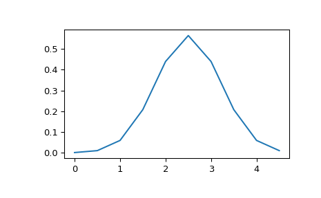
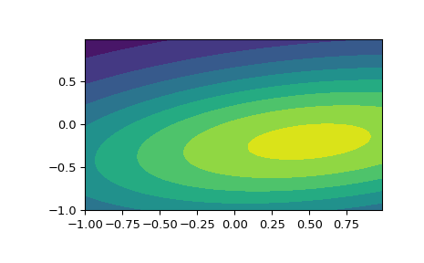

scipy.stats.multivariate_normal¶
-
scipy.stats.multivariate_normal= <scipy.stats._multivariate.multivariate_normal_gen object>[source]¶ A multivariate normal random variable.
The mean keyword specifies the mean. The cov keyword specifies the covariance matrix.
- Parameters
- xarray_like
Quantiles, with the last axis of x denoting the components.
- meanarray_like, optional
Mean of the distribution (default zero)
- covarray_like, optional
Covariance matrix of the distribution (default one)
- allow_singularbool, optional
Whether to allow a singular covariance matrix. (Default: False)
- random_stateNone or int or np.random.RandomState instance, optional
If int or RandomState, use it for drawing the random variates. If None (or np.random), the global np.random state is used. Default is None.
- Alternatively, the object may be called (as a function) to fix the mean
- and covariance parameters, returning a “frozen” multivariate normal
- random variable:
- rv = multivariate_normal(mean=None, cov=1, allow_singular=False)
Frozen object with the same methods but holding the given mean and covariance fixed.
Notes
- Setting the parameter mean to None is equivalent to having mean
be the zero-vector. The parameter cov can be a scalar, in which case the covariance matrix is the identity times that value, a vector of diagonal entries for the covariance matrix, or a two-dimensional array_like.
The covariance matrix cov must be a (symmetric) positive semi-definite matrix. The determinant and inverse of cov are computed as the pseudo-determinant and pseudo-inverse, respectively, so that cov does not need to have full rank.
The probability density function for
multivariate_normalis\[f(x) = \frac{1}{\sqrt{(2 \pi)^k \det \Sigma}} \exp\left( -\frac{1}{2} (x - \mu)^T \Sigma^{-1} (x - \mu) \right),\]where \(\mu\) is the mean, \(\Sigma\) the covariance matrix, and \(k\) is the dimension of the space where \(x\) takes values.
New in version 0.14.0.
Examples
>>> import matplotlib.pyplot as plt >>> from scipy.stats import multivariate_normal
>>> x = np.linspace(0, 5, 10, endpoint=False) >>> y = multivariate_normal.pdf(x, mean=2.5, cov=0.5); y array([ 0.00108914, 0.01033349, 0.05946514, 0.20755375, 0.43939129, 0.56418958, 0.43939129, 0.20755375, 0.05946514, 0.01033349]) >>> fig1 = plt.figure() >>> ax = fig1.add_subplot(111) >>> ax.plot(x, y)
The input quantiles can be any shape of array, as long as the last axis labels the components. This allows us for instance to display the frozen pdf for a non-isotropic random variable in 2D as follows:
>>> x, y = np.mgrid[-1:1:.01, -1:1:.01] >>> pos = np.dstack((x, y)) >>> rv = multivariate_normal([0.5, -0.2], [[2.0, 0.3], [0.3, 0.5]]) >>> fig2 = plt.figure() >>> ax2 = fig2.add_subplot(111) >>> ax2.contourf(x, y, rv.pdf(pos))
Methods
``pdf(x, mean=None, cov=1, allow_singular=False)``
Probability density function.
``logpdf(x, mean=None, cov=1, allow_singular=False)``
Log of the probability density function.
``cdf(x, mean=None, cov=1, allow_singular=False, maxpts=1000000*dim, abseps=1e-5, releps=1e-5)``
Cumulative distribution function.
``logcdf(x, mean=None, cov=1, allow_singular=False, maxpts=1000000*dim, abseps=1e-5, releps=1e-5)``
Log of the cumulative distribution function.
``rvs(mean=None, cov=1, size=1, random_state=None)``
Draw random samples from a multivariate normal distribution.
``entropy()``
Compute the differential entropy of the multivariate normal.